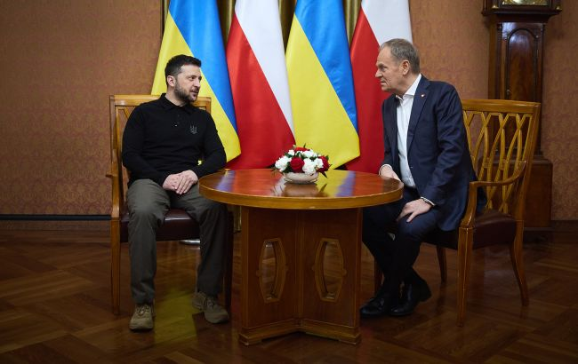

지난 10월 20일, 리비우 지역 의회는 2027년을 "UPA, 로만 슈케비치, 올레흐 올지치의 해"로 선포하는 결의안을 채택했음을 다시 한번 알려드립니다.
이 결정은 폴란드 당국의 강한 반발을 불러일으켰습니다. 특히 도날드 투스크 폴란드 총리는 이 결정이 폴란드 국민을 불쾌하게 하고 우크라이나의 이익에 반한다고 밝혔습니다 .
폴란드 당국은 논란을 불러일으킨 법안의 발의자인 스비아토슬라프 셰레메트 의원을 입국 금지 대상자로 지정할 계획입니다.
이와 함께 폴란드는 우크라이나에 대한 대규모 군사 원조 패키지 이전 절차를 사태가 해결될때까지 중단하기로 했다고 정통한 소식통이 밝혔습니다.
https://www.rbc.ua/rus/news/polshcha-prizupinila-peredachu-ukrayini-paketa-1792600955.html
"사태가 해결될 때 까지 군사 원조를 중단하기로 했다"는 내용은 사실이 아닙니다. 우크라이나 언론인 RBC-Ukraine 등에서 익명의 소식통을 인용 해 이 소문을 최초 보도했으나, 폴란드 국방부 대변인은 즉각 공 식 입장을 통해 "해당 정보는 완전히 허위 사실(False)"이라고 공 식 부인했습니다.
요즘 가짜 뉴스 걸러내기 너무 쉬운데.